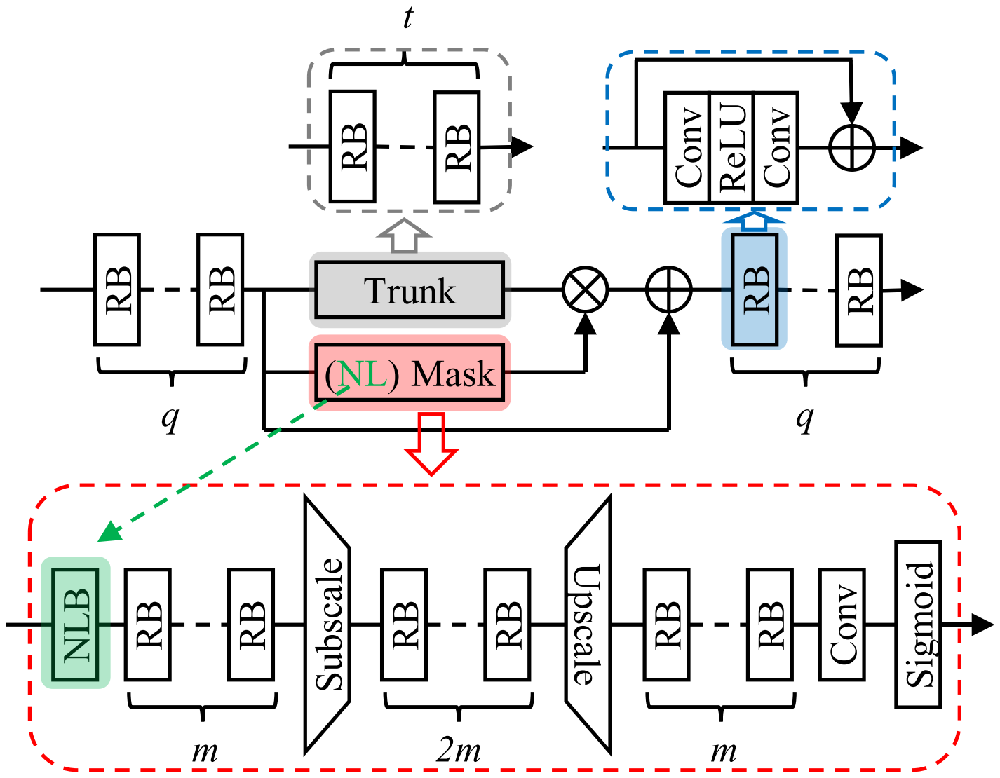

Residual Non-Local Attention Networks for Image Restoration¶
Image restoration aims to recover high-quality (HQ) images from their corrupted low-quality (LQ) observations.
Previous CNN-based image restoration methods have three limitations:
the receptive field size is relatively small
distinctive ability is limited: noise removal is eaiser in the plain area, so the model should focus on textual area more
all channel-wise features are treated equally
In this paper, the authors propose the residual non-local attention network (RNAN) for high-quality image restoration. They design residual local and non-local attention blocks to extract features that capture the long-range dependencies between pixels and pay more attention to the challenging parts.
Experiments demonstrate that this method obtains comparable or better results compared with recently leading methods quantitatively and visually.
Framework¶
Denote \(I_L\) and \(I_H\) as the low-quality and high-quality images. The reconstructed iamges \(I_R\) can be obtained by
The framework of RNAN is shown in the figure below. The first and last convolutional layers are shallow feature extractor and reconstruction layer. They propose residual local and non-local attention blocks (RAB and RNAB) to extract hierarchical attention-aware features.
The goal of training RNAN is to minimize the L2 loss function:
{kind=link}
Residual Non-Local Attention Block¶
Each attention block is divided into two parts: \(q\) residual blocks (RBs) in the beginning and end of attention block, and two branches in the middle part: trunk branch and mask branch.
{kind=link}
Trunk branch. The trunk branch includes \(t\) residual blocks (RBs). They adopt the simplified RB from [1]. Feature maps from trunk branches of different depths serve as hierarchical features.
Mask branch. The mask branch learn mixed attention maps in channel- and spatial-wise simultaneously. To grasp information of larger scope, the authors choose to use large-stride convolution and deconvolution to enlarge receptive field size.
Non-local mixed attention. Non-local blocks (NLBs) are incorporated into the mask branch to obtain non-local mixed attention. The non-local operation is defined as:
{kind=link}
Residual non-local attention learning. One form of attention residual learning was proposed in [1]:
which is found not suitable for image restoration tasks. Instead the authors use:
which can preserve more low-level features.
Reference¶
[1] Lim, B., Son, S., Kim, H., Nah, S., & Mu Lee, K. (2017). Enhanced deep residual networks for single image super-resolution. In Proceedings of the IEEE conference on computer vision and pattern recognition workshops (pp. 136-144).